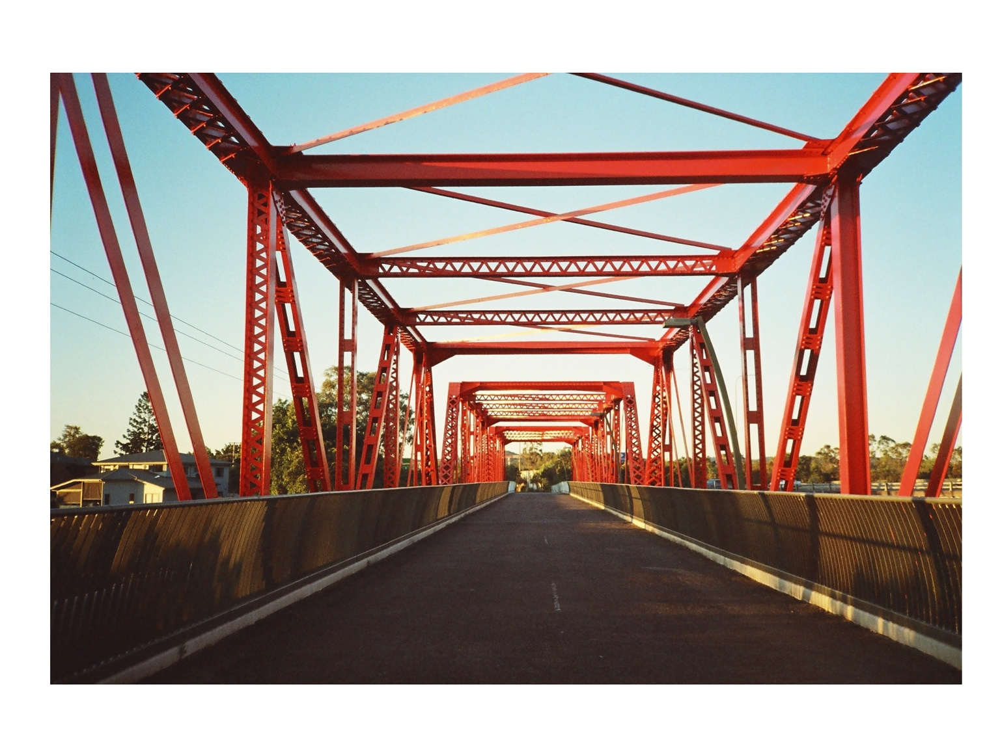

Photography · Devon, UK
Snaps
by CJ
Architecture, coastlines and everyday moments captured on 35mm film, paper cameras and iPhone.
Selected photographs
Places, light and quiet moments.
Film · Paper camera · iPhone
Approach
I photograph the places and small moments that make me stop and look twice.
About
Hi, I’m CJ.
I’m a photographer based in Devon, UK. I photograph architecture, coastlines, street scenes and everyday moments using 35mm film cameras, paper cameras and iPhone.
I’m drawn to structure, natural light and scenes that feel quiet or slightly unexpected. I enjoy the grain, colour shifts and imperfections that give each photograph its own character.
Cameras
35mm film cameras
Paper cameras
iPhone
Film stocks
Fujifilm 200
Kodak Gold
Kodak Ultramax 400
Ilford HP5 and others
Contact